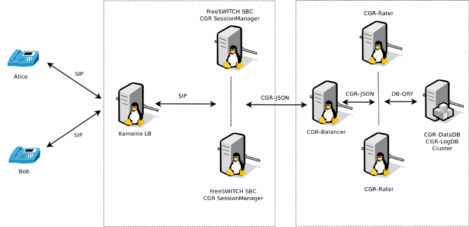

FreeSWITCH integration¶
Being the original platform supported by CGRateS, FreeSWITCH has the advantage of support for complete set of CGRateS features. When used as Telecom Switch it fully supports all rating modes: prepaid/postpaid/pseudoprepaid/rated. A typical use case would be like the one in the diagram below:
The process of rating is decoupled into two different components:
SessionManager¶
TODO - update and add CDRs and CDRc.
Attached to FreeSWITCH via the socket library, enhancing CGRateS with real-time call monitoring and call control functions.
- In Prepaid mode implements the following behaviour:
- On CHANNEL_PARK event received from FreeSWITCH:
Authorize the call by calling GetMaxSessionTime on the Rater.
- Sets the channel variable cgr_notify via uuid_setvar to one of the following values:
MISSING_PARAMETER: if one of the required channel variables is missing and CGRateS cannot make rating.
SYSTEM_ERROR: if rating could not be performed due to a system error.
INSUFFICIENT_FUNDS: if MaximSessionTime is 0.
AUTH_OK: Call is authorized to proceed.
Un-Park the call via uuid_transfer to original dialed number. The FreeSWITCH administrator is expected to make use of cgr_notify variable value to either allow the call going further or reject it (eg: towards an IVR or returning authorization fail message to call originator).
- On CHANNEL_ANSWER event received:
Index the call into CGRateS’s cache.
Starts debit loop by calling at configured interval MaxDebit on the Rater.
- If any of the debits fail:
Set cgr_notify channel variable to either SYSTEM_ERROR in case of errors or INSUFFICIENT_FUNDS of there would be not enough balance for the next debit to proceed.
Send hangup command with cause MANAGER_REQUEST.
- On CHANNEL_HANGUP_COMPLETE event received:
Refund the reserved balance back to the user’s account (works for both monetary and minutes debited).
Save call costs into CGRateS LogDB.
In Postpaid mode:
- On CHANNEL_ANSWER event received:
Index the call into CGRateS’s cache.
- On CHANNEL_HANGUP_COMPLETE event received:
Call Debit RPC method on the Rater.
Save call costs into CGRateS LogDB.
- On CGRateS Shutdown execute, for security reasons, hangup commands on calls which can be CGR related:
hupall MANAGER_REQUEST cgr_reqtype prepaid
hupall MANAGER_REQUEST cgr_reqtype postpaid